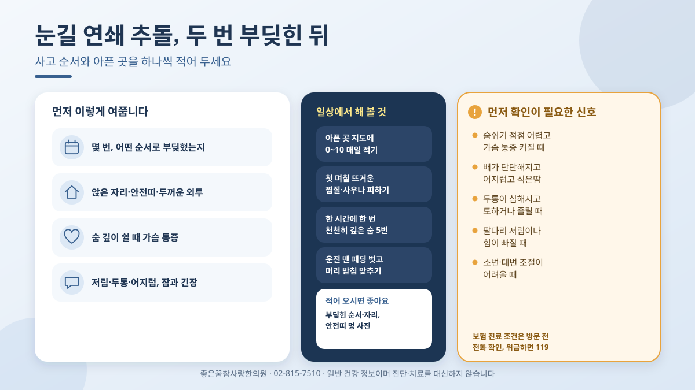

이종호 한의사 감수좋은꿈참사랑한의원 대표원장 (한의사 면허번호 19769)발행 2026-11-28 · 수정 2026-11-28
이 글의 차례
눈이 내린 12월 출퇴근길이나 연말 귀성길 정체 속에서는 한 대가 미끄러지며 여러 대가 잇달아 부딪히는 연쇄 추돌이 생기곤 합니다. 이런 사고에서는 뒤차에 받혀 몸이 한 번 흔들리고, 곧바로 앞차에 부딪히며 다시 한 번 쏠리는 식으로 짧은 순간에 방향이 다른 충격을 두 번 이상 받게 됩니다.
그래서 목과 허리가 함께 아프고, 안전띠가 지나간 가슴과 쇄골, 어깨에 멍과 통증이 생기며, 브레이크를 밟던 다리나 운전대를 쥐던 손목까지 불편해지는 경우가 많습니다. 먼저 사고 순서와 몸이 쏠린 방향, 아픈 곳을 하나씩 적어 두고, 가슴 통증이나 두통처럼 검사가 먼저 필요한 신호가 있는지 확인한 뒤 진료 순서를 정하는 것이 좋습니다.
숨쉬기가 점점 어려워지거나, 배가 점점 아프고 단단해지거나, 두통이 심해지며 토한다면 생활 관리보다 응급 확인이 먼저입니다.
왜 연쇄 추돌은 한 번 부딪힌 사고와 다르게 살펴야 할까요
- 뒤에서 받히면 몸통은 앞으로 밀리고 머리는 잠깐 뒤로 젖혀졌다가 앞으로 꺾입니다. 그 직후 앞차를 들이받으면 몸이 다시 앞으로 쏠리며 안전띠에 걸리고, 목은 한 번 더 앞뒤로 흔들립니다. 짧은 사이에 서로 다른 방향의 힘이 겹치는 셈입니다.
- 첫 충격에 놀라 근육이 잔뜩 긴장한 상태에서 두 번째 충격을 받기 때문에, 목과 허리 주변 근육과 인대에 부담이 더 크게 남을 수 있습니다.
- 두 번째 충격에서는 안전띠가 가슴과 쇄골, 한쪽 어깨를 강하게 붙잡습니다. 띠가 지나간 대각선을 따라 멍이 들고, 숨을 깊이 쉬거나 기침할 때 가슴이 아플 수 있습니다.
- 앞차에 부딪히기 직전까지 브레이크를 세게 밟고 있었다면 오른쪽 무릎과 발목에, 운전대를 꽉 쥐고 있었다면 손목과 팔꿈치에 힘이 전해지기도 합니다.
- 눈길에서는 차가 미끄러지며 비스듬히 돌아 부딪히는 일이 많아, 몸이 앞뒤뿐 아니라 옆으로도 흔들릴 수 있습니다. 이럴 때는 목과 허리의 한쪽이 더 아프기도 합니다.
- 겨울에는 두꺼운 패딩을 입은 채 안전띠를 매는 경우가 많습니다. 띠가 몸에 딱 붙지 않아 충격 때 몸이 더 많이 움직였을 수 있습니다.
- 사고 뒤 차 밖에서 찬바람을 맞으며 사진을 찍고 보험사를 기다리느라 오래 서 있으면, 놀란 몸이 추위로 더 굳어 그날 밤부터 온몸이 쑤시기도 합니다.
- 아픈 곳이 여러 군데이면 가장 아픈 곳에 가려 다른 곳은 하루 이틀 뒤에야 알아차리는 경우가 흔합니다. 근육과 인대의 통증은 사고 다음 날이나 며칠 뒤에 더 뚜렷해지기도 합니다.
- 여러 차량이 얽혀 사고 처리가 길어지면 그 과정의 긴장과 걱정이 잠을 얕게 하고 통증을 더 크게 느끼게 할 수 있습니다.
- 한의학에서는 갑작스러운 충격으로 놀란 몸에 기운과 혈의 흐름이 막히고 어혈이 머무는 모습으로 이런 상태를 살피기도 합니다. 그래서 아픈 자리만이 아니라 놀람과 잠, 소화까지 함께 봅니다.
먼저 이렇게 여쭙니다
- 몇 번 부딪혔는지, 뒤에서 먼저였는지 앞에서 먼저였는지, 각각의 충격이 얼마나 컸는지 여쭙니다.
- 몇 번째 차의 어느 자리에 앉아 계셨는지, 안전띠를 하셨는지, 머리 받침 높이는 맞았는지, 두꺼운 외투를 입고 계셨는지 여쭙니다.
- 부딪히는 순간 브레이크를 밟고 있었는지, 운전대를 쥐고 있었는지, 고개를 한쪽으로 돌리거나 숙이고 있었는지 여쭙니다.
- 에어백이 터졌는지, 차가 미끄러지며 옆으로 돌았는지 여쭙니다.
- 응급실이나 병원에서 받은 검사와 들은 설명, 처방받은 약을 여쭙니다.
- 가슴이 숨을 깊이 쉴 때, 기침할 때, 누를 때 중 언제 아픈지 여쭙니다.
- 팔다리 저림, 두통, 어지럼, 메스꺼움, 귀 울림이 있는지 여쭙니다.
- 무릎, 발목, 손목, 팔꿈치처럼 목과 허리 말고 불편한 곳이 있는지 여쭙니다.
- 사고 뒤 잠이 얕아졌는지, 차를 탈 때 긴장되고 장면이 떠오르는지 여쭙니다.
일상에서 먼저 해 볼 수 있는 것
사고 당일과 다음 날
- 현장에서는 괜찮다고 느껴도 가슴, 머리, 목에 통증이 있다면 그날 병원에서 검사를 받습니다. 충격이 두 번이었다는 점을 꼭 말씀하세요.
- 사고 메모를 남깁니다. 날짜와 시각, 장소와 도로 상태(눈, 빙판), 부딪힌 횟수와 순서, 내 차가 몇 번째였는지, 앉은 자리를 적습니다.
- 종이에 사람 모양을 그리고 아픈 곳을 모두 표시한 뒤, 곳마다 0~10 숫자로 정도를 적습니다. 매일 같은 시각에 다시 적으면 늦게 나타난 통증도 놓치지 않습니다.
- 안전띠 자국이나 멍이 있다면 날짜별로 사진을 찍어 둡니다.
- 첫 2~3일은 무거운 짐을 들거나 운동하지 않고, 목을 소리 나게 돌리거나 꺾지 않습니다.
- 붓고 열감이 있는 곳은 수건에 싼 얼음을 10분 정도 대고 떼기를 하루 두세 번 해 봅니다. 첫 며칠은 뜨거운 찜질과 사우나를 피합니다.
잠자리와 일어나는 방법
- 베개는 너무 높지 않게 하고, 목 아래 빈 곳에 얇은 수건을 말아 받칩니다.
- 가슴 한쪽이 아프다면 그쪽으로 눕지 않고, 등 뒤에 쿠션을 받쳐 상체를 조금 높이면 숨쉬기가 편할 수 있습니다.
- 일어날 때는 옆으로 돌아누운 뒤 팔로 바닥을 짚고 밀어 올리듯 일어납니다. 누운 채 상체를 한 번에 일으키면 목과 허리, 가슴에 모두 부담이 됩니다.
가슴이 아플 때의 숨쉬기
- 가슴이 아프면 숨을 얕게만 쉬게 되기 쉽습니다. 한 시간에 한 번쯤 아프지 않은 범위에서 천천히 깊게 숨쉬기를 다섯 번 합니다.
- 기침이나 재채기가 나올 때는 쿠션을 가슴에 대고 살짝 눌러 받칩니다.
- 숨쉬기가 점점 어려워지거나 통증이 날마다 커진다면 지켜보지 말고 바로 확인을 받습니다.
며칠이 지나서
- 아프지 않은 범위에서 목을 좌우로 천천히 돌리기와 기울이기, 어깨 돌리기를 하루 두세 번 다섯 번씩 합니다.
- 실내나 해가 든 평지를 10~20분 걷습니다. 눈이 녹지 않은 길과 빙판은 피합니다.
- 다시 운전할 때는 머리 받침이 뒤통수 높이에 오도록 맞추고 등받이를 너무 눕히지 않습니다. 두꺼운 패딩은 벗고 타거나 지퍼를 열어 안전띠가 몸에 붙도록 합니다.
- 운전대를 잡는 것이 긴장된다면 한동안은 대중교통을 이용하고, 눈이 오는 날에는 운전을 미룹니다.
연말 일정과 서류
- 사고 뒤 몇 주는 송년회와 술자리를 줄이고 잠자는 시간을 먼저 확보합니다.
- 사고 접수 번호, 병원 영수증과 검사 결과, 진단서 같은 서류는 한 봉투에 모아 둡니다. 보험 처리 방법은 보험사에, 한의원의 자동차보험 진료 조건은 방문 전 전화로 확인해 주세요.
상황별 예시
- 예를 들어 눈 내린 퇴근길 내리막 정체에서 뒤차에 받히고 그 힘에 앞차까지 밀려 부딪힌 30대 운전자인 경우, 다음 날 목 뒤가 뻣뻣하고 안전띠가 지나간 왼쪽 쇄골 아래에 멍이 들며 숨을 깊이 쉴 때 찌릿할 수 있습니다. 가슴 통증은 먼저 병원에서 갈비뼈 상태를 확인하고, 그 뒤 목과 허리 진료 순서를 정합니다.
- 예를 들어 연쇄 추돌 가운데 끼인 차의 조수석에서 휴대폰을 보느라 고개를 숙이고 있던 50대인 경우, 목 아래쪽과 등 위쪽이 특히 결릴 수 있습니다. 고개를 한쪽으로 돌리고 있었다면 그 반대쪽 목이 더 아프기도 해, 사고 순간의 자세를 기억해 두면 살필 곳을 정하는 데 도움이 됩니다.
- 예를 들어 맨 뒤에서 미끄러지며 브레이크를 끝까지 밟은 채 앞차를 들이받은 운전자인 경우, 목과 허리 말고도 오른쪽 무릎과 발목, 운전대를 쥔 손목이 함께 불편할 수 있습니다. 아픈 곳 지도에 빠짐없이 표시해 두면 진료 때 놓치지 않습니다.
- 예를 들어 사고를 수습하느라 찬바람 속 갓길에서 40분 넘게 서 있었던 40대인 경우, 그날 밤부터 온몸이 쑤시고 놀란 마음에 잠을 설칠 수 있습니다. 집에 오면 몸을 따뜻하게 하고 일찍 잠자리에 들며, 다음 날 통증과 잠을 함께 적어 둡니다.
자주 하는 오해
- 가장 아픈 곳 하나만 말하면 된다고 여기기 쉽지만, 연쇄 추돌은 여러 곳이 함께 다치는 일이 많아 불편한 곳을 모두 알려 주시는 편이 좋습니다.
- 안전띠 자국 멍은 저절로 사라지니 괜찮다고 생각하기 쉽습니다. 대개는 그렇지만, 숨을 쉴 때나 기침할 때 통증이 점점 커진다면 갈비뼈 상태를 확인해야 합니다.
- 에어백이 터지지 않았으니 가벼운 사고라고 여기는 분도 있습니다. 에어백이 터지지 않아도 두 번의 충격은 목과 허리에 부담을 남길 수 있습니다.
- 사고 직후 엑스레이가 괜찮았으니 다 끝났다고 생각하기 쉽지만, 근육과 인대의 상태는 엑스레이로 잘 보이지 않고 통증이 며칠 뒤 나타나기도 합니다.
- 운전이 무서운 것은 마음이 약해서라고 여기는 분도 있습니다. 사고를 겪은 뒤 흔히 생길 수 있는 반응이어서, 혼자 참기보다 진료 때 함께 말씀해 주시면 좋습니다.
스스로 점검해 보세요
- 사고 때 두 번 이상 부딪혔고, 그 순서를 기억하고 있다.
- 목과 허리 말고도 가슴, 어깨, 무릎, 손목 가운데 불편한 곳이 있다.
- 안전띠가 지나간 자리에 멍이나 통증이 있다.
- 숨을 깊이 쉬거나 기침할 때 가슴이 아프다.
- 팔다리 저림이나 심해지는 두통은 없다.
- 사고 다음 날이나 며칠 뒤 새로 아파진 곳이 있다.
- 사고 뒤 잠이 얕아지고, 차를 탈 때 긴장된다.
한의원에서 함께 살필 수 있는 경우
- 병원 검사에서 뼈에는 큰 이상이 없다고 들었지만 목과 허리, 등의 통증과 뻣뻣함이 이어지는 경우
- 아픈 곳이 여러 군데라 어디부터 살펴야 할지 순서를 함께 정하고 싶은 경우
- 안전띠가 지나간 어깨와 가슴 주변이 결리고, 팔을 들거나 숨을 깊이 쉴 때 불편한 경우
- 사고 뒤 잠이 얕아지고 놀란 느낌, 차를 탈 때의 긴장이 남아 있는 경우
좋은꿈참사랑한의원에서는 첫 방문 때 문진으로 사고 날짜와 부딪힌 횟수와 순서, 앉아 있던 자리, 이미 받은 검사와 설명을 먼저 여쭙고 맥부터 짚어 봅니다. 진맥으로 놀란 몸의 긴장과 피로, 잠의 상태를 살핀 뒤 목과 어깨, 등과 허리, 골반을 직접 움직여 보며 어느 방향에서 불편한지 하나씩 확인하고, 무릎이나 손목처럼 함께 불편한 곳도 빠짐없이 살핍니다.
힘줄이나 근육 상태를 더 자세히 볼 필요가 있으면 초음파로 살피기도 하고, 갈비뼈나 신경 쪽 확인이 먼저라고 판단되면 영상 검사가 가능한 병원을 안내해 드립니다. 그 뒤 침 치료와 추나, 온열 치료, 생활 조정 가운데 무엇부터 할지 순서를 함께 정하고, 다음 진료에서는 지난번 표시한 아픈 곳 지도를 다시 펼쳐 곳마다 어떻게 달라졌는지 이어서 여쭙니다.
자동차보험 진료 조건은 사고마다 다를 수 있어 방문 전 전화로 확인해 주세요.
얼마나 지켜보고 언제 상담할까요
- 사고 뒤 며칠은 아픈 곳 지도와 0~10 숫자를 매일 같은 시각에 적으며 변화를 봅니다.
- 통증이 일주일 넘게 비슷하거나 점점 심해진다면 진료를 받아 함께 살펴보시길 권합니다.
- 사고 직후 괜찮다가 며칠 뒤 새로 아파진 곳이 생겼다면 기다리지 말고 상담을 받아 보셔도 좋습니다.
- 숨쉬기 불편, 심해지는 두통, 팔다리 저림이 있다면 지켜보지 말고 먼저 확인합니다.
이렇게 기록해 오시면 상담이 쉬워집니다
- 사고 날짜와 시각, 장소와 도로 상태, 부딪힌 횟수와 순서, 내 차가 몇 번째였는지
- 앉아 있던 자리, 안전띠와 외투, 머리 받침 높이, 에어백이 터졌는지
- 이미 받은 검사와 병원에서 들은 설명, 처방받은 약
- 아픈 곳 지도와 날짜별 0~10 숫자, 안전띠 자국 사진
- 저림, 두통, 어지럼, 메스꺼움, 숨쉴 때의 가슴 통증 여부
- 잠의 변화와 차를 탈 때의 긴장, 사고 접수 번호처럼 진료 접수에 필요한 정보
이런 증상은 먼저 확인이 필요합니다
- 숨쉬기가 점점 어려워지거나, 숨 쉴 때 가슴 통증이 날마다 커지거나, 기침에 피가 섞이는 경우
- 배가 점점 아프고 단단해지거나, 어지럽고 식은땀이 나며 얼굴이 창백해지는 경우
이런 신호가 있으면 한의원보다 가까운 병원이나 응급실을 먼저 찾으세요.
관련 글
- 교통사고 뒤 가슴이 아픈 것은 안전벨트 때문일까요?
- 편타손상(채찍질 손상)은 무엇이고 어떤 때 병원을 먼저 가나요?
- 교통사고 후 첫 일주일은 어떻게 지내면 좋을까요?

여쭙는 것
- 몇 번 부딪혔는지, 뒤에서 먼저였는지 앞에서 먼저였는지, 각각의 충격이 얼마나 컸는…
- 몇 번째 차의 어느 자리에 앉아 계셨는지, 안전띠를 하셨는지, 머리 받침 높이는 맞…
- 부딪히는 순간 브레이크를 밟고 있었는지, 운전대를 쥐고 있었는지, 고개를 한쪽으로…
생활에서 해 볼 것
- 현장에서는 괜찮다고 느껴도 가슴, 머리, 목에 통증이 있다면 그날 병원에서 검사를…
- 사고 메모를 남깁니다. 날짜와 시각, 장소와 도로 상태(눈, 빙판), 부딪힌 횟수와…
- 종이에 사람 모양을 그리고 아픈 곳을 모두 표시한 뒤, 곳마다 0~10 숫자로 정도…
한의원에서 함께 살필 것
- 병원 검사에서 뼈에는 큰 이상이 없다고 들었지만 목과 허리, 등의 통증과 뻣뻣함이…
- 아픈 곳이 여러 군데라 어디부터 살펴야 할지 순서를 함께 정하고 싶은 경우
- 안전띠가 지나간 어깨와 가슴 주변이 결리고, 팔을 들거나 숨을 깊이 쉴 때 불편한 경우
먼저 확인이 필요한 신호
- 숨쉬기가 점점 어려워지거나, 숨 쉴 때 가슴 통증이 날마다 커지거나, 기침에 피가…
- 배가 점점 아프고 단단해지거나, 어지럽고 식은땀이 나며 얼굴이 창백해지는 경우
한눈에 보는 표
| 구분 | 핵심 |
|---|---|
| 여쭙는 것 | 몇 번 부딪혔는지, 뒤에서 먼저였는지 앞에서 먼저였는지, 각각의 충격이 얼마나 컸는지 여쭙니다. 몇 번째 차의 어느 자리에 앉아 계셨는지, 안전띠를 하셨는지, 머리 받침 높이는 맞았는지, 두꺼운 외투를 입고 계셨는지 여쭙니다. |
| 생활에서 해 볼 것 | 현장에서는 괜찮다고 느껴도 가슴, 머리, 목에 통증이 있다면 그날 병원에서 검사를 받습니다. 충격이 두 번이었다는 점을 꼭 말씀하세요. 사고 메모를 남깁니다. 날짜와 시각, 장소와 도로 상태(눈, 빙판), 부딪힌 횟수와 순서, 내 차가 몇 번째였는지, 앉은 자리를 적습니다. |
| 한의원에서 함께 살필 것 | 병원 검사에서 뼈에는 큰 이상이 없다고 들었지만 목과 허리, 등의 통증과 뻣뻣함이 이어지는 경우 아픈 곳이 여러 군데라 어디부터 살펴야 할지 순서를 함께 정하고 싶은 경우 |
| 먼저 확인이 필요한 신호 | 숨쉬기가 점점 어려워지거나, 숨 쉴 때 가슴 통증이 날마다 커지거나, 기침에 피가 섞이는 경우 배가 점점 아프고 단단해지거나, 어지럽고 식은땀이 나며 얼굴이 창백해지는 경우 |
자주 묻는 질문
아픈 곳이 여러 군데인데 진료 때 한꺼번에 말해도 되나요?
네, 불편한 곳은 모두 말씀해 주세요. 아픈 곳 지도에 표시해 오시면 함께 보며 어디부터 살필지 순서를 정하기 쉽습니다. 늦게 아파진 곳도 빠뜨리지 않고 알려 주시는 것이 좋습니다.
안전띠 자국을 따라 멍이 들었는데 괜찮을까요?
안전띠 멍은 연쇄 추돌에서 흔히 생기고 대개는 시간이 지나며 옅어집니다. 다만 숨을 깊이 쉬거나 기침할 때 통증이 점점 커지거나 숨이 차다면 갈비뼈와 가슴 상태를 먼저 확인해야 합니다.
연쇄 추돌이면 자동차보험 진료는 어떻게 되나요?
여러 차량이 얽힌 사고는 처리 방식이 사고마다 다를 수 있습니다. 보험 처리는 보험사와 확인하시고, 한의원의 자동차보험 진료 조건은 방문 전 전화로 확인해 주세요.
사고 직후 병원에서 이상 없다고 했는데 며칠 뒤 더 아파졌어요.
근육과 인대의 통증은 며칠 뒤 더 뚜렷해지기도 합니다. 들은 검사 결과와 함께 새로 아파진 곳과 날짜를 알려 주시면 그것을 참고해 살피고, 필요하면 다시 검사를 받으시도록 안내해 드립니다.
어떤 경우에 바로 응급실에 가야 하나요?
숨쉬기가 점점 어려워지는 경우, 배가 단단해지며 어지럽고 식은땀이 나는 경우, 두통이 심해지며 토하거나 의식이 흐려지는 경우, 팔다리에 힘이 빠지는 경우는 지체하지 말고 가까운 응급실로 가세요.
좋은꿈참사랑한의원은 재진 때 지난번 이야기부터 이어서 여쭙니다. 진료시간과 예약은 오시는 길에서 확인하세요.
어디서 상담받을 수 있나요?
좋은꿈참사랑한의원은 서울 동작구 만양로2길 2 신성빌딩 3층·5층(서울 동작구 상도동, 7호선 상도역 3번 출구 근처)에 있습니다. 한의사 3명(이종호 대표원장, 조영기 수석진료원장, 정원영 진료원장)이 진료합니다. 진료시간은 평일 09:30~20:00(점심 13:00~14:00), 토·일·공휴일 09:30~15:00이며, 방문 전 전화로 확인을 권합니다. 예약은 네이버 예약, 카카오톡 상담, 전화 02-815-7510로 받습니다.
이 글은 일반적인 건강 정보이며 개인의 진단이나 치료를 대신하지 않습니다. 증상이 있거나 복용 중인 약이 있다면 진료를 통해 확인하세요. 치료 효과는 개인마다 다를 수 있습니다.
작성 기준: 일반적으로 알려져 있는 건강 정보를 참고해 정리했습니다(대표원장 감수). 증상 기록은 1~2주 동안 하루 1회, 비슷한 시간에 적어 오시면 지난 상태와 비교하기 쉽습니다.